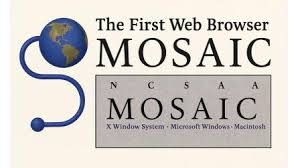

Inicio
Internet y la web han transformado la forma en que aprendemos, trabajamos y nos comunicamos. Desde sus inicios hasta hoy, han sido motores de cambio social y tecnológico.
Internet y la web han transformado la forma en que aprendemos, trabajamos y nos comunicamos. Desde sus inicios hasta hoy, han sido motores de cambio social y tecnológico.





¿Sabías que el primer sitio web aún está disponible? Visítalo aquí. Creado por el científico británico Tim Berners-Lee en el CERN (Suiza). Fue publicado el 6 de agosto de 1991. La página explicaba el proyecto World Wide Web (WWW), diseñado para el intercambio de información entre científicos